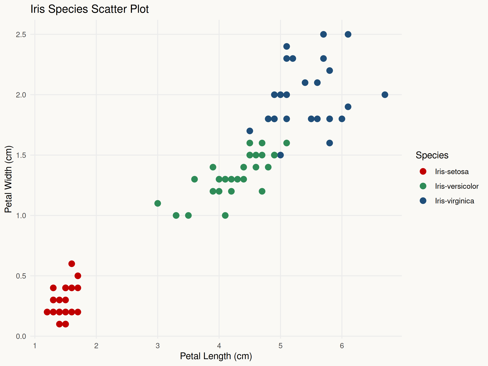
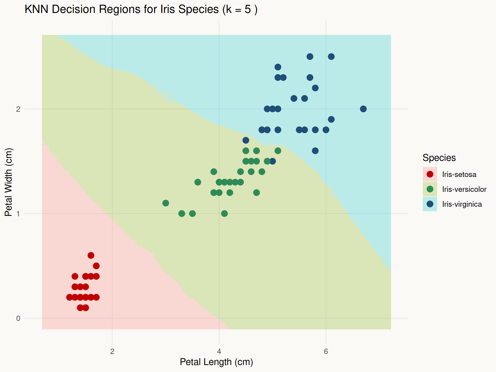

A clean, static fallback for the same KNN story
How KNN separates three flower species
A clean 5-minute story about similarity, class boundaries, and why k = 5 gave us the best balance for Iris.
Why Iris is a strong KNN teaching dataset
Three iris species, one very explainable classification story
We picked Iris because it is small, clean, and immediately visual. That makes it ideal for showing how KNN votes by similarity instead of by a complex formula.
That overlap is useful for the presentation because it gives us a reason to discuss why k matters. With Iris, the audience can see both a strong separation and a slightly ambiguous boundary in the same dataset.

Cleaning was minimal, so the story stays on the model
What the slide should say
- We kept preprocessing light because Iris is already clean.
- The main model point is the KNN vote, not the data wrangling.
- That keeps the deck easy to narrate in five minutes.
How KNN turns nearby flowers into a vote
KNN is a local vote among the nearest examples
A new flower is classified by finding the k closest training flowers and letting them vote on the label.
For Iris, this is easy to explain with the petal features: flowers with nearby measurements usually belong to the same species. The schematic on the right is better than a raw model printout for teaching the idea.
k = 5 is the static reference point for the baseline deck

Metrics
| Iris-setosa | Iris-versicolor | Iris-virginica | |
|---|---|---|---|
| Iris-setosa | 16 | 0 | 0 |
| Iris-versicolor | 0 | 19 | 2 |
| Iris-virginica | 0 | 0 | 23 |
This is the best single-slide summary of the model: the decision surface is smooth enough to generalize, but still local enough to respect the visible class structure.
What the final KNN result says about the data
What the team should say at the end
- Iris is a great teaching dataset because the classes are visible, but not perfectly trivial.
- KNN works naturally here because similar flowers really do cluster together in feature space.
- Because it is accurate, simple, and easy to explain, KNN is the better choice than a CNN for this kind of flower recognition task.